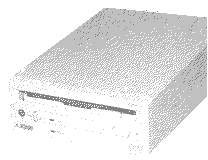

Previous
Next
TOC
Das CDAR 505 war der Nachfolger des CDAR 504 und wurde 1993 vorge-
stellt. Es besitzt einen direkten SCSI Anschluß und war für den Be-
trieb am Falcon030 gedacht. Aufgrund der rapide sinkenden Preise für
CD ROM Laufwerke wurde das CDAR 505 sogut wie garnicht mehr verkauft
obwohl es marktfertig war. Das Laufwerk ist im grunde nichts anderes
als ein umgelabeltes Laufwerk der Firma Chinon mit Atari Schriftzug
und entsprechenden Gehäuse.

Kapitel Die CD ROM Laufwerke CDAR 504 und CDAR 505, Seite 3